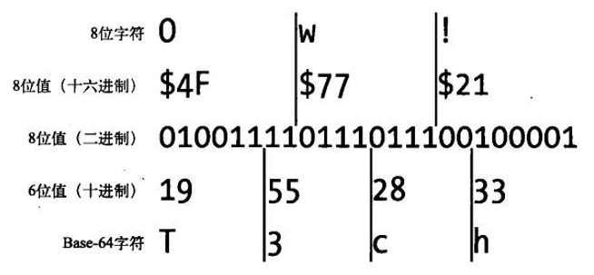
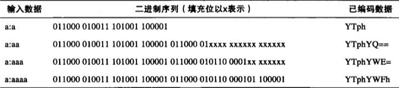

前言
base-64作为常见的编码函数，在基本认证、摘要认证以及一些HTTP扩展中得到了大量应用。在前端领域，也常常把图片转换为base-64编码在网络中传输。
原理
Base-64编码可以将任意一组字节转换成较长的常见文本字符序列，从而可以合法地作为首部字段值。Base-64编码将用户输入或二进制数据，打包成一种安全格式，将其作为HTTP首部字段的值发送出去，而无须担心其中包含会破坏HTTP分析程序的冒号、换行符或二进制值
Base-64编码是作为MIME多媒体电子邮件标准的一部分开发的，这样MIME就可以在不同的合法电子邮件网关之间传输富文本和任意的二进制数据了。Base-64编码与将二进制数据文本化表示的uuencode和BinHex标准在本质上很类似，但空间效率更高
【拆分】
Base-64编码将一个8位字节序列拆散为6位的片段，并为每个6位的片段分配一个字符，这个字符是Base-64字母表中的64个字符之一。这64个输出字符都是很常见的，可以安全地放在HTTP首部字段中。这64个字符中包含大小写字母、数字、+和/，还使用了特殊字符=
下表Base-64的字母表
0 A 8 I 16 Q 24 Y 32 g 40 o 48 w 56 4
1 B 9 J 17 R 25 Z 33 h 41 p 49 x 57 5
2 C 10 K 18 S 26 a 34 i 42 q 50 y 58 6
3 D 11 L 19 T 27 b 35 j 43 r 51 z 59 7
4 E 12 M 20 U 28 c 36 k 44 s 52 0 60 8
5 F 13 N 21 V 29 d 37 l 45 t 53 1 61 9
6 G 14 O 22 W 30 e 38 m 46 u 54 2 62 +
7 H 15 P 23 X 31 f 39 n 47 v 55 3 63 /
[注意]由于Base64编码用8位字符表示信息中的6个位，所以Base-64编码字符串大约比原始值扩大了 33%
【编码实现】
下图是一个简单的Base-64编码实例。在这里，三个字符组成的输入值“Ow!”是Base-64编码的，得到的是4个字符的Base-64编码值“T3ch”。它是按以下方式工作的

1、字符串“Ow!”被拆分成3个8位的字节(0x4F、0x77、0x21)
2、这3个字节构成了一个24位的二进制值010011110111011100100001
3、这些位被划分为一些6位的序列010011、110111、01110、100001
4、每个6位值都表示了从0-63之间的一个数字，对应Base-64字母表中64个 字符之一。得到的Base-64编码字符串是个4字符的字符串“T3ch”，然后就可 以通过线路将这个字符串作为“安全的”8位字符传送出去，因为只用了一些 移植性最好的字符(字母、数字等)
【填充】
Base-64编码收到一个8位字节序列，将这个二进制序列流划分成6位的块。二进制序列有时不能正好平均地分成6位的块，在这种情况下，就在序列末尾填充零位，使二进制序列的长度成为24的倍数(6和8的最小公倍数)
对已填充的二进制串进行编码时，任何完全填充(不包含原始数据中的位)的6位组都由特殊的第65个符号“=”表示。如果6位组是部分填充的，就将填充位设置为0
下表显示了一些填充实例

初始输入字符串“a:a”为3字节(24位)。24是6和8的倍数，因此无需填充，得到的Base-64编码字符串为“YTph”
然而，再增加一个字符，输入字符串会变成32位长。而6和8的下一个公倍数是48，因此要添加16位的填充码。填充的前4位是与数据位混合在一起的。得到的6位组01xxxx，会被当作010000、十进制中的16，或者Base-64编码的Q来处理。剩下的两个6位组都是填充码，用“=”表示
应用
网页上的每一个图片，都需要消耗一个http请求下载而来的。所以，才有了雪碧图技术
无论如何，图片的下载始终都要向服务器发出请求，要是图片的下载不用向服务器发出请求，而可以随着HTML的下载同时下载到本地那就太好了，而base64正好能解决这个问题
前面提到过Base-64编码字符串大约比原始值扩大了33%。所以，不是所有的图片使用base-64编码都合适
但是，如果图片足够小且因为用处的特殊性(如需要平铺等)无法被制作成雪碧图，在整个网站的复用性很高且基本不会被更新。那么此时使用base64编码传输图片就可谓好钢用在刀刃上
比如，一个只有50字节的2px*2px的背景图。将其转化成base64编码，只有100多个字符，相比一个http请求，这种转换无疑更值得推崇
字符串编码
对于字符串来说，在javaScript中，有2个函数分别用来处理解码和编码base64字符串：atob()和btoa()
btoa()函数能够从二进制数据“字符串”创建一个base-64编码的ASCII字符串；相反地，atob()函数能够解码通过base-64编码的字符串数据。
btoa('abc') //'YWJj' // 字符串 -> base64
atob('YWJj') //'abc' // base64 -> 字符串
[注意]IE9-浏览器不支持
但是，以上方法有局限性，就是无法转换中文
这时，就需要使用编码方法，先转换为btoa()识别的字符，再进行base64编码，如可以使用encodeURI()方法
btoa(encodeURI('小狮子')); // 字符串 -> base64
decodeURI(atob(str)); // base64 -> 字符串
图片编码
使用文件File API的readAsDataURL()方法，可以将文件以数据URI(进行Base64编码)形式保存在result属性中
//base64转换函数
function base64(file){
if(file){
if(/image/.test(file.type)){
var reader = new FileReader();
reader.readAsDataURL(file);
reader.onload = function(){
fileData.innerHTML = reader.result;
}
}else{
alert("You must select a valid image file!");
}
}
}
更多关于图片上传的问题可以参考文章>>> 前端上传文件的理解